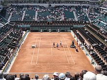

L'histoire du tennis
Je vais ici meme vous raconter l'histoire du tennis
accueil •
Les règles du Tennis •
Le terrain et le matériels de Tennis •
Les différents tournois au Tennis •
Le classement des joueurs de Tennis •
cv anglais •
cv francais •
Quelques joueurs célébres
• Le tennis est une adaptation anglaise du jeu de paume. La première mise en jeu s'effectuant à quinze pieds, puis trente, puis quarante, d'où la façon particulière de compter les points dans le tennis moderne. À la suite de la bataille d'Azincourt (1415), le duc d’Orléans est emprisonné pendant deux décennies en Angleterre. À l’occasion de cette captivité à Wingfield dans le comté de Norfolk, le duc introduit en Angleterre le jeu de paume qu’il pratiquait presque quotidiennement2. Le tennis est né selon les sources entre 1850 et 1870 soit plus de quatre siècles plus tard. En 1858 le major Harry Gem esquisse une sorte de court de tennis sur le gazon de sa propriété : il joue un jeu assez similaire au tennis actuel. Vers 1863, le Major Walter Clopton Wingfield, descendant du châtelain de Wingfield, pratique aussi une sorte de tennis dans sa résidence à Londres. Vers 1869, dans le Warwickshire, Harry Gem et son ami espagnol Augurio Perera expérimentent une nouvelle version du jeu qu'ils appelèrent d'abord pelota puis plus tard lawn rackets. Gem, Perera, Frederic Haynes et Arthur Tomkin forment un club à Leamington : c'est le premier club de lawn tennis du monde. C'est donc probablement Harry Gem qui a inventé le « tennis moderne » (issu du jeu de paume français) mais c'est Wingfield qui est passé à la postérité car il a commercialisé ce sport sous le nom de « sphairistike » le 23 février 1874 mais il ne l'a pas inventé comme la légende le prétend. Le sphairistike est la conséquence du jeu de paume et de l’invention du caoutchouc qui permet de réaliser des balles pouvant rebondir sur l’herbe. C'est le chaînon manquant entre le jeu de paume et le tennis3. Le tennis en Angleterre a d'ailleurs pour nom lawn tennis (« tennis sur herbe » en anglais) tandis que le jeu de paume est désigné sous le nom real tennis (« vrai tennis »). Le mot « tennis » provient du français « tenez », mot que l'on adressait à l'adversaire au moment de servir. Le mot, déformé en moyen anglais en « tenetz », « teneys » ou « tenes », finira par devenir « tennis »2,3. Il semble que le premier tournoi de tennis eut lieu en août 1876 sur un court aménagé dans la propriété de M. William Appleton à Nahant dans le Massachusetts et remporté par James Dwight4. Suit le Tournoi de Wimbledon en 1877 du 9 au 16 (ou 19) juillet, futur Internationaux amateurs de Grande-Bretagne, qui est donc le plus vieux tournoi encore existant. La finale de la première édition se joue devant 200 spectateurs. L’Anglais Spencer Gore s’impose en simple messieurs (24 participants). À l’occasion de ce tournoi, les règles du sphairistike de Wingfield sont modifiées par les organisateurs qui deviennent, de fait, et pendant une décennie, la seule autorité en matière de tennis.

• La rivalité, jadis très vive, entre amateurs et professionnels, n'a pas rendu possible, pendant longtemps, d'établir des classements objectifs des meilleurs joueurs. Les professionnels sont interdits jusqu'en mars 1968 de toute compétition organisée par la Fédération Internationale (Coupe Davis…) ou par les Fédérations nationales (Internationaux des pays comme ceux du Grand Chelem…). Néanmoins certaines comparaisons entre ces différents joueurs furent possibles (par exemple : en janvier 1963 Rod Laver, vainqueur du Grand Chelem en 1962, fut opposé aux deux meilleurs professionnels de 1962, Kenneth Robert Rosewall et Lewis Alan Hoad, dans le cadre d'une tournée en Australasie sur gazon : Laver a remporté deux matchs et a subi… 19 défaites, indiquant clairement la suprématie des vieux professionnels) : il semble qu'à partir de 1948 le meilleur joueur du monde fut probablement toujours un joueur professionnel. Depuis 1931 tous les plus grands champions de l'ère pré-« open » sont passés professionnels et, si on excepte Henri Cochet, ils ont tous atteint leur apogée dans le circuit pro : Bill Tilden, Ellsworth Vines, Fred Perry, Donald Budge, Bobby Riggs, Jack Kramer, Pancho Segura, Pancho Gonzales, Frank Sedgman, Tony Trabert, Ken Rosewall, Lew Hoad, Rod Laver.

